Définition
La diffraction est un phénomène physique correspondant à la modification de la direction de propagation d'une onde au passage d'une petite ouverture ou d'un petit obstacle.
Dans une cuve à ondes, on envoie des ondes rectilignes sur un obstacle percé d'une ouverture de largeur a. Le comportement de l'onde dépend du rapport entre a et la longueur d'onde λ.

Observations
- Le phénomène de diffraction ne modifie pas la fréquence ni la longueur d'onde de l'onde.
- La diffraction dépend de la longueur d'onde λ de l'onde incidente et de la dimension a de l'ouverture ou de l'obstacle ; le phénomène est d'autant plus marqué que a est voisin ou inférieur à λ.
On envoie un faisceau laser de longueur d'onde λ sur une fente fine de largeur a. Sur un écran placé à une distance D, on observe une tache centrale lumineuse, large et intense, entourée de taches secondaires plus faibles, séparées par des extinctions (zones sombres).

Observations
- L'onde diffractée présente des maximas et des minimas (extinctions) d'amplitude.
- Plus la largeur a de la fente diminue, plus la largeur ℓ des taches augmente.
🧪 Application — Simulation de diffraction et interférence
Manipule l'animation ci-dessous (Adrien Willm — ostralo.net) : choisis « Une fente » ou « Deux fentes », puis fais varier la longueur d'onde, la largeur des fentes et la distance à l'écran pour observer l'effet sur la figure obtenue.
🔬 Investigation guidée — retrouve la relation entre θ, λ et a
Sur la simulation, choisis le mode « Une fente ». Règle une distance écran D et une longueur d'onde λ, note leurs valeurs, et ne les modifie plus pendant cette étape. Fais varier la largeur a de la fente sur toute la plage disponible du curseur (4 valeurs différentes) et, à l'aide de la règle de la simulation, mesure à chaque fois la distance x entre le centre de la tache centrale et la 1ère extinction.
| a (µm) | x mesuré (cm) | θ ≈ x/D (auto, rad) | a × θ (auto) |
|---|---|---|---|
Fixe maintenant une largeur de fente a et une distance écran D, note leurs valeurs. Fais varier λ sur toute la plage disponible (4 valeurs) et mesure à chaque fois la distance x entre le centre et la 1ère extinction.
| λ (nm) | x mesuré (cm) | θ ≈ x/D (auto, rad) | θ / λ (auto) |
|---|---|---|---|
Relation de l'angle caractéristique de diffraction
Pour une onde de longueur d'onde λ traversant une ouverture de largeur a, l'écart angulaire θ (en rad) vérifie :
Lien avec la largeur de la tache centrale
L'écart angulaire étant très faible, on peut confondre tan θ et θ (en radian). Sur un écran à une distance D de la fente, la tache centrale de diffraction a pour largeur totale L, avec :
📈 Animation interactive — Diffraction d'un faisceau laser
Fais varier la largeur a de la fente à l'aide du curseur et observe l'effet sur l'écart angulaire θ et la figure de diffraction obtenue sur l'écran (λ = 633 nm, laser hélium-néon).
✏️ Exercice — Exploitation d'un graphique θ = f(1/a)
Exercices n° 7, 12, 13, (23 résolu) et 29 p. 428 à 439.

Définition
Lorsque deux ondes monochromatiques de même nature se superposent, l'amplitude de l'onde résultante varie dans l'espace et des zones d'amplitude minimale et maximale apparaissent : c'est le phénomène d'interférence.
Conditions d'observation
Pour observer des interférences, les deux sources émettrices doivent être :
- synchrones (avoir la même fréquence) ;
- cohérentes (avoir un déphasage constant).
Une onde monochromatique peut être modélisée par une fonction sinusoïdale prenant alternativement des valeurs positives et négatives (succession de crêtes et de creux). On considère deux ondes de même longueur d'onde se superposant.
Sources secondaires cohérentes
Pour observer des interférences avec une lumière, on utilise une source primaire que l'on divise pour créer deux sources secondaires cohérentes S1 et S2 (par exemple deux fentes fines et parallèles, appelées fentes d'Young). Des franges d'interférences apparaissent alors à l'intérieur de la figure de diffraction, sur un écran.
Différence de marche
Considérons deux sources cohérentes S1 et S2, et un point P du milieu de propagation. Les deux ondes issues des sources parcourent respectivement les distances S1P et S2P avant d'arriver en P. On appelle différence de marche la quantité :

Conditions d'interférences constructives / destructives
⇒ Si la différence de marche δ est égale à un nombre entier de longueurs d'onde, les deux ondes arrivent en P en phase : leurs élongations maximales coïncident, la somme est maximale.
⇒ Si la différence de marche vaut un nombre demi-entier de longueurs d'onde, les deux signaux arrivent en opposition de phase : la somme des deux ondes est nulle.
✏️ Exercice — Nature de l'interférence
✏️ Exercice — Établir la formule de la différence de marche
Le programme ci-dessous met en œuvre la formule que tu viens d'établir pour calculer δ = S₂P − S₁P, puis en déduit la nature de l'interférence en P, pour le cas λ = 633 nm, a = 500 µm, D = 2,00 m.
Ce que tu dois faire : modifie uniquement la valeur numérique de x (en mm) dans la case surlignée ci-dessous, à la ligne x = …, puis clique sur ▶ Exécuter pour voir ce qu'afficherait le programme.
import numpy as np
lam = 633e-9 # longueur d'onde (m)
a = 500e-6 # écart S1-S2 (m)
D = 2.00 # distance sources-écran (m)
x = e-3 # position de P sur l'écran, EN MM ← À MODIFIER
S1P = np.sqrt(D**2 + (x - a/2)**2)
S2P = np.sqrt(D**2 + (x + a/2)**2)
delta = S2P - S1P # différence de marche
n = delta / lam # rapport delta/lambda
print("delta =", delta, "m")
print("delta/lambda =", n)
if abs(n - round(n)) < 0.05:
print("--> interférence CONSTRUCTIVE (frange brillante)")
elif abs(abs(n - round(n)) - 0.5) < 0.05:
print("--> interférence DESTRUCTIVE (frange sombre)")
else:
print("--> ni constructive ni destructive")
✏️ Exercice — Exploiter le programme
Pour une frange brillante, δ doit être proche d'un multiple entier de λ (n = 0, 1, 2…) ; pour une frange sombre, δ doit être proche d'un demi-entier de λ. Après chaque essai, regarde la ligne delta/lambda = … affichée dans la console : rapproche-la d'abord d'un nombre entier (pour x₁), puis d'un nombre du type n + 0,5 (pour x₂).
Comme a ≪ D, on peut estimer δ ≈ a·x/D (approximation qui sera vue dans l'onglet suivant). Cela donne un ordre de grandeur de départ pour x₁, puis x₂ ≈ x₁/2. Pars de cette estimation en mm, puis affine par petits pas avec le programme (qui calcule δ exactement, sans approximation).
Interfrange
Lors des interférences lumineuses, la distance séparant deux milieux de zones sombres consécutives (ou deux franges brillantes consécutives) est appelée interfrange i. Dans le cadre des trous d'Young, sa valeur est donnée par :
D : distance entre les sources secondaires et l'écran (m) · a : distance entre les 2 sources secondaires (m)

✏️ Exercice — Calcul de l'interfrange

Si les sources secondaires émettent de la lumière blanche, on n'observe que quelques franges colorées au centre de la figure d'interférences : ce sont les couleurs interférentielles. Les deux sources émettent plusieurs radiations de longueurs d'onde différentes, correspondant à des figures d'interférences différentes qui se superposent. Les couleurs sont mélangées car les franges de différentes couleurs se brouillent au-delà du centre.
✏️ Exercice — Pourquoi la bulle de savon est-elle colorée ?
Exercices n° 8, 20, 24, (25 résolu), 26, 35, 37 et 39 p. 428 à 439.
🧪 Simulation — Interférences d'ondes (PhET)
Choisis l'onglet « Ondes » (ou « Lumière »), passe en mode « Deux sources », et active l'affichage des « Écrans » ou de la règle pour effectuer des mesures.
✏️ Exploiter la simulation
Compare cette valeur calculée à l'écart entre deux franges que tu observes directement sur l'écran de la simulation : sont-elles cohérentes ?
🧪 Activité 1 : TP1 - Diffraction des ondes
Capacité expérimentale travaillée : exploiter la relation donnant l'angle caractéristique de diffraction dans le cas d'une onde lumineuse diffractée par une fente rectangulaire. Toutes les mesures de ce TP peuvent être réalisées directement sur l'animation ci-dessous (Adrien Willm — ostralo.net), qui simule le dispositif laser + fente + écran, règle de mesure comprise.
Pense à l'œil : quelle partie du corps un faisceau laser, même de faible puissance, peut-il endommager de façon irréversible ? Que ne faut-il jamais faire, même par réflexion sur une surface brillante (montre, bague, écran) ?
En optique géométrique (propagation rectiligne de la lumière), à quoi devrait ressembler la tache sur l'écran juste derrière une fente très étroite ? Compare avec la figure réellement obtenue sur l'animation (tache centrale large + taches secondaires) : le faisceau reste-t-il confiné dans la direction du rayon incident ?
Lance l'animation en mode « Une fente ». Observe la répartition de lumière sur l'écran : y a-t-il une tache centrale et des taches secondaires ? Comment leur intensité évolue-t-elle en s'éloignant du centre ? La fente est verticale : dans quelle direction la figure s'étale-t-elle par rapport à elle ?
Sur l'animation, fais varier un seul paramètre à la fois (λ, largeur de fente a, distance à l'écran D) en laissant les deux autres fixes, et observe à chaque fois si la tache centrale s'élargit ou se rétrécit. Combien de paramètres distincts peux-tu ainsi tester ? Pour chacun, la tache s'élargit-elle quand le paramètre augmente ou quand il diminue ?
DOC. 2 — Figure de diffraction obtenue avec une fente verticale de largeur a
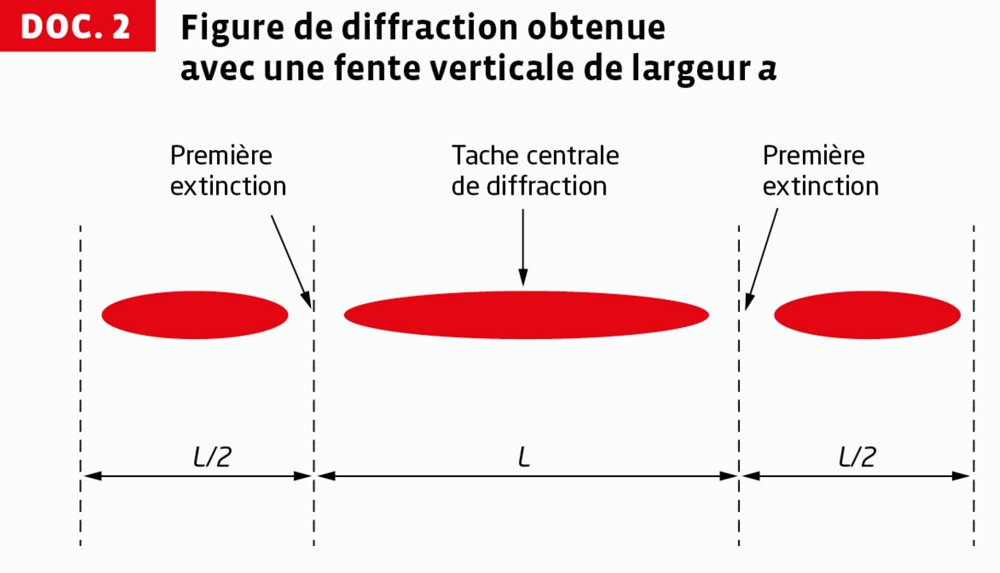
Mode « Une fente », choisis une distance D et une longueur d'onde λ que tu gardes fixes pour toute cette série de mesures. Utilise la règle graduée de l'animation pour repérer les deux premières extinctions encadrant la tache centrale : d est la distance entre elles. Fais varier uniquement a et recommence pour au moins 5 valeurs différentes.
Fais un schéma avec le triangle formé par le milieu de la fente, le milieu de la tache centrale sur l'écran, et la première extinction. θ est le demi-angle au sommet de ce triangle. Que vaut tan θ en fonction de d/2 et D ? Utilise ensuite l'approximation des petits angles.
Utilise θ ≈ (d/2)/D, en veillant à exprimer d et D dans la même unité avant de faire le calcul.
Si θ est inversement proportionnel à a, quelle grandeur calculée à partir de tes mesures (par exemple a × θ, ou θ tracé en fonction de 1/a) devrait rester constante, ou donner une droite passant par l'origine ? Teste cette idée avec tes propres valeurs.
Ce coefficient est le produit a × θ (supposé constant). θ, en radian, est sans unité : quelle est donc l'unité de a × θ ? Compare sa valeur numérique à la longueur d'onde λ affichée sur l'animation, dans la même unité.
D'après tes réponses aux questions 7 et 8, écris θ en fonction de λ et a.
Combine la relation trouvée en question 5 (d en fonction de θ et D) avec celle de la question 9 (θ en fonction de λ et a). La relation obtenue confirme-t-elle bien les tendances qualitatives proposées en question 3 pour λ, a et D ?
Utilise la relation trouvée en question 10 « à l'envers » : à partir d'une mesure de d, de λ et de D, quelle grandeur peux-tu isoler pour en déduire a' ? Sur l'animation, tu peux simuler un « cheveu » de diamètre inconnu en réglant a à une valeur que tu ne regardes pas, puis en essayant de la retrouver uniquement à partir d'une mesure de d.
Calcule d'abord ΔD et Δd avec la formule donnée (incertitude de lecture liée à la plus petite graduation, ici 1 div = 1 mm). Reporte ces valeurs, ainsi que D, d et a', dans la formule de Δa donnée. Le résultat final s'écrit sous la forme a' = (valeur ± incertitude) unité.
📋 Activité 2 : Passage d'une onde par une ouverture
Surprendre une conversation en se tenant à côté de l'ouverture d'une porte ou d'une fenêtre peut se faire sans que la personne ne se rende compte de notre présence, comme en témoigne une scène du film américain La Couleur des sentiments (2011) de Tate Taylor.
Comment écouter une discussion sans être vu ?
DOC. 1 — Schéma de la situation vue de dessus
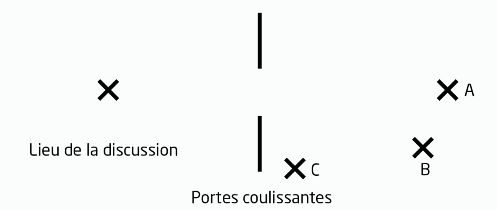
DOC. 2 — Expérience filmée avec une cuve à ondes
Expérience montrant le passage d'une onde à la surface de l'eau, à travers une ouverture dont la taille est modifiée.
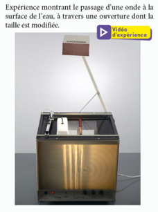
Pour observer et faire varier toi-même la taille de l'ouverture par rapport à la longueur d'onde, utilise la simulation interactive ci-dessous (mode « Ondes », PhET) en guise de substitut à la vidéo d'expérience du doc. 2 :
- Fentes réglables ou de différentes largeurs pour dispositifs optique et acoustique.
- Laser, diapositive opaque percée d'un trou, écran.
- Émetteur (avec alimentation) et récepteur d'ultrasons.
- Oscilloscope.
- Fils de connexion.
a. La diffraction est une propriété des ondes qui les caractérise lorsqu'elles traversent une ouverture. Visionner la vidéo du doc. 2 (ou manipuler la simulation ci-dessus) et observer les directions de propagation de l'onde au passage de l'ouverture.
Sur la simulation, choisis une ouverture étroite (proche ou plus petite que λ) : la ligne d'onde ressort-elle toujours strictement dans la direction incidente, ou s'étale-t-elle dans toutes les directions derrière l'ouverture ?
Pense à un dispositif où tu peux à la fois régler la largeur d'une ouverture et connaître (ou mesurer) une longueur d'onde : fentes réglables + laser (onde lumineuse), ou émetteur/récepteur d'ultrasons + oscilloscope (onde acoustique). N'oublie pas les précautions liées au laser, déjà vues en Activité 1.
1. Pour la lumière, la longueur d'onde (≈ 0,5 µm) est totalement négligeable devant la largeur de l'ouverture : la diffraction de la lumière est donc imperceptible, et on ne voit une personne que si elle se trouve dans l'axe direct de l'ouverture. C'est le cas de la position A (alignée avec l'ouverture) : elle serait vue. Les positions B et C, décalées par rapport à cet axe, ne sont pas dans le champ de vision direct : la personne n'y est a priori pas vue. La question 3 permet de vérifier lesquelles de ces positions permettent malgré tout d'entendre, grâce à la diffraction du son.
2a. Sur la vidéo (ou la simulation), lorsque l'ouverture est étroite, l'onde ne se contente pas de continuer tout droit derrière l'ouverture : elle s'étale dans un large secteur angulaire, y compris vers des directions obliques qui n'existaient pas dans l'onde incidente. C'est la signature de la diffraction.
2b. La diffraction est nettement visible lorsque a est de l'ordre de grandeur ou inférieure à λ. Quand l'ouverture est très supérieure à λ, l'onde continue quasiment tout droit (pas de diffraction perceptible) — c'est justement la situation de la lumière face à une porte.
2c. Deux protocoles possibles : (1) onde lumineuse — diriger un laser sur une diapositive percée d'un trou ou sur des fentes réglables, observer la tache de diffraction sur un écran en réduisant progressivement la largeur (précaution : ne jamais diriger le faisceau vers les yeux, ni regarder une réflexion directe) ; (2) onde acoustique — placer un émetteur d'ultrasons face à une fente réglable et un récepteur relié à un oscilloscope de l'autre côté, faire varier la largeur de la fente et observer l'élargissement du faisceau détecté hors de l'axe direct.
3. Pour une voix humaine, on prend une fréquence typique f de quelques centaines de Hz (par exemple 300–500 Hz). Avec vson ≈ 340 m/s, λ = v/f est de l'ordre du mètre, c'est-à-dire du même ordre de grandeur que la largeur d'une ouverture de porte. La condition de diffraction marquée (a de l'ordre de grandeur de λ) est donc vérifiée pour le son : l'onde sonore s'étale largement après l'ouverture et peut atteindre la position C, alors même que cette position est hors de l'axe direct — contrairement à la lumière, qui ne diffracte pas à cette échelle. C'est cette dissymétrie (le son diffracte, la lumière non) qui permet d'entendre sans être vu. Pour une justification chiffrée complète, mesure la largeur réelle de l'ouverture et la position de C sur le schéma à l'échelle du doc. 1.
📋 Activité 3 : Superpositions de deux ondes
Dans un documentaire, le chroniqueur canadien Derek Muller réalise une expérience de superposition de deux ondes à la surface de l'eau, ce qui conduit à des résultats étonnants.
Comment interpréter les résultats de cette expérience ?
DOC. 1 — Conditions d'interférences
Deux ondes peuvent interférer si elles sont de même nature (comme deux ondes à la surface de l'eau) et de même fréquence (sources synchrones). Lorsque deux ondes interfèrent, les signaux correspondant à chacune des ondes s'additionnent. En un point M, il y a interférences constructives si l'amplitude du signal résultant en ce point est maximale et interférences destructives si l'amplitude du signal résultant en M est minimale.
DOC. 2 — Somme s3(t) de deux signaux sinusoïdaux s1(t) et s2(t) au point M
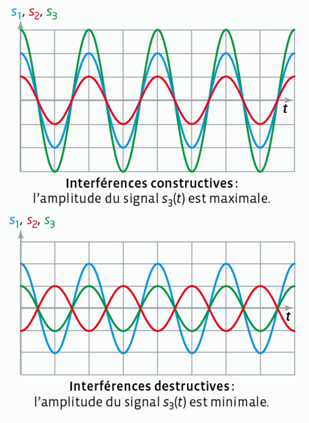
DONNÉES
![Données : S1 et S2 sont deux sources synchrones en phase qui émettent des ondes de même nature dans un milieu homogène. L'expression du signal au point M atteint par l'onde issue de S1 à l'instant t s'écrit s1(t) = A1 cos(2π/T × t). L'expression du signal au point M atteint par l'onde issue de S2 à l'instant t s'écrit s2(t) = A2 cos(2π/T × (t − τ)), où τ est le retard pris par l'onde issue de S2 par rapport à celle issue de S1 du fait de la différence de distances δ = d2 − d1 parcourues par les deux ondes pour atteindre M, appelée aussi différence de marche. Schéma : S1 et M sont reliés par la distance d1, S2 et M par la distance d2.](Entrainements/AD3-2.png)
Sur l'animation, règle l'écart entre les deux sources (donc δ en un point M donné) pour te placer successivement dans les cas δ = kλ et δ = (k+1/2)λ. Observe si le point M se trouve sur une zone de renforcement (ventre) ou d'annulation (nœud) de la figure d'interférences, et relie cette observation aux conditions établies en 2c.
1. Sur l'animation, les deux pointes émettrices sont pilotées par un seul et même générateur de vibrations : elles oscillent donc exactement à la même fréquence et avec un déphasage constant (nul ici, elles sont en phase) — c'est cette synchronisation qui permet d'observer une figure d'interférences stable dans le temps.
2a. τ = kT (k entier) : le retard correspond à un nombre entier de périodes, donc s₂(t) = s₁(t) à chaque instant — les deux signaux s'additionnent au maximum.
2b. τ = (k + 1/2)T (k entier) : le retard correspond à un nombre entier de périodes plus une demi-période, donc s₂ est en opposition de phase avec s₁ à chaque instant — les deux signaux s'annulent au maximum.
2c. Avec τ = δ/v et λ = vT, la condition τ = kT devient δ = kλ (interférences constructives) et τ = (k+1/2)T devient δ = (k+1/2)λ (interférences destructives).
3. Sur l'animation, les points où δ = kλ correspondent aux zones de renforcement (ventres) de la figure d'interférences : l'amplitude y est maximale. Les points où δ = (k+1/2)λ correspondent aux zones d'annulation (nœuds) : l'amplitude y est quasi nulle. On retrouve ainsi visuellement, sur toute la surface de l'eau, l'alternance de zones constructives et destructives prédite par les conditions établies en 2c.
📋 Activité 4 : Expérience des trous d'Young
En 1801, le physicien britannique Thomas Young (1773-1829) fait passer un faisceau de lumière à travers deux petits trous côte à côte et observe le résultat sur un écran. La superposition des deux faisceaux conduit à l'apparition de zones alternativement sombres et brillantes : les franges d'interférences.
Comment déterminer la distance entre deux franges brillantes consécutives ?
DOC. 1 — Expérience des trous d'Young avec un laser
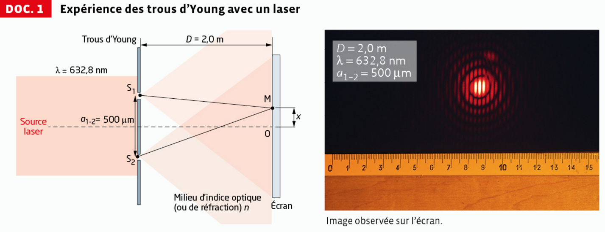
DOC. 2 — Expression linéarisée de la différence de chemin optique
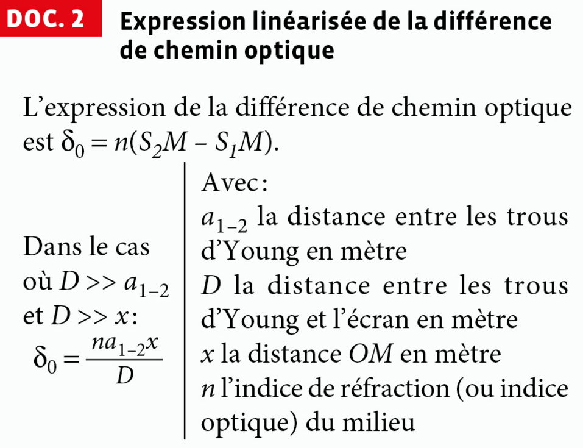
> a1-2 et D >> x, δ0 = n·a1-2·x/D, avec a1-2 la distance entre les trous d'Young en mètre, D la distance entre les trous d'Young et l'écran en mètre, x la distance OM en mètre, n l'indice de réfraction (ou indice optique) du milieu." style="max-width:420px;width:100%;display:block;margin:10px auto;">DONNÉES
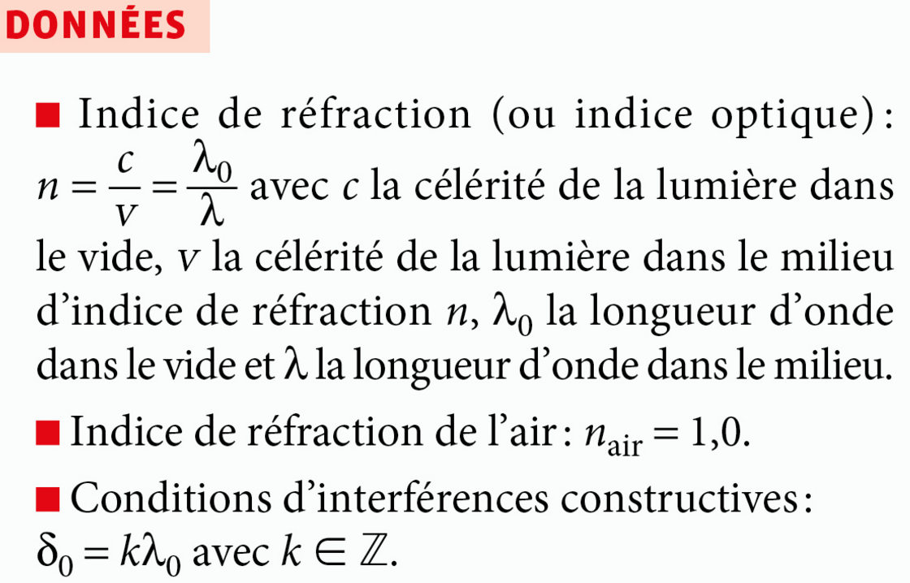
Utilise i = λD/a₁₋₂ avec λ = λ₀ (l'air a un indice n_air ≈ 1,0, donc λ = λ₀/n ≈ λ₀), λ₀ = 632,8 nm, D = 2,0 m et a₁₋₂ = 500 µm. Convertis toutes les longueurs dans la même unité (le mètre) avant de calculer. Compare ensuite la valeur trouvée (en mm) à l'écartement des franges visible sur la règle graduée de la photographie.
1. Les franges régulières observées sont dues aux interférences entre les deux faisceaux issus de S₁ et S₂ ; l'enveloppe circulaire décroissante qui les contient est due à la diffraction de la lumière par chacun des deux trous.
2a. xk = kλ₀D/(n·a1-2) et xk+1 = (k+1)λ₀D/(n·a1-2).
2b. i = xk+1 − xk = λ₀D/(n·a1-2) = λD/a1-2 (avec λ = λ₀/n).
3a. [i] = [λ][D]/[a1-2] = m × m / m = m : l'expression est bien homogène à une longueur.
3b. Dans l'air, nair ≈ 1,0 donc λ ≈ λ₀ = 632,8 nm = 632,8×10⁻⁹ m. Avec D = 2,0 m et a1-2 = 500 µm = 5,00×10⁻⁴ m : i = λD/a1-2 = (632,8×10⁻⁹ × 2,0)/(5,00×10⁻⁴) ≈ 2,5×10⁻³ m = 2,5 mm. Cette valeur est cohérente avec l'écartement des franges brillantes visible sur la règle graduée de la photographie du doc. 1.
🧪 Activité 5 : TP — Interférences des ondes
Au début du XIXe siècle, le physicien britannique Thomas Young réalise une expérience qui a marqué l'Histoire des Sciences car elle établit de façon indiscutable la nature ondulatoire de la lumière.
Capacité expérimentale : exploiter l'expression donnée de l'interfrange dans le cas des interférences de deux ondes lumineuses, en utilisant éventuellement un logiciel de traitement d'image.
En respectant les consignes de sécurité, réaliser le dispositif expérimental : laser de longueur d'onde λ, fentes d'Young S1S2 distantes de b, écran millimétré placé à une distance D d'au moins 1 m des fentes. Les fentes d'Young sont deux fentes étroites et parallèles.
Regarde d'abord la forme générale de la tache lumineuse sur l'écran (un phénomène déjà rencontré en Activité 1), puis observe ce qui se passe à l'intérieur de la tache centrale : y a-t-il une seule zone uniformément éclairée, ou une alternance de zones claires et sombres ?
Observe les franges sombres au sein de la figure d'interférences : à ces endroits précis, les deux faisceaux issus de S₁ et S₂ arrivent-ils en phase ou en opposition de phase ? Que peux-tu en conclure sur l'addition de deux signaux lumineux en un point donné ?
On appelle interfrange i la distance qui sépare les centres de deux franges brillantes ou de deux franges sombres consécutives.
Fais varier un seul paramètre à la fois (la distance D fentes-écran, l'écartement b des fentes, la couleur/longueur d'onde λ du laser si tu disposes de plusieurs lasers) en gardant les autres fixes. Pour chacun, l'interfrange augmente-t-il ou diminue-t-il quand le paramètre augmente ?
a/ i = x·b×D b/ i = x·D/b c/ i = x·b/D d/ i = λ/(D×b)
Deux méthodes pour éliminer les mauvaises propositions : (1) l'homogénéité — une distance i doit s'exprimer uniquement à partir de grandeurs cohérentes entre elles (x est ici une grandeur auxiliaire de calcul, pas une donnée du problème isolée) ; (2) la cohérence avec ta réponse à la question 3 — i doit être proportionnel à D et inversement proportionnel à b. Une seule proposition vérifie ces deux critères.
D'après la formule retenue en question 4, que devient la valeur de i lorsque D augmente ? En quoi un interfrange plus grand facilite-t-il la mesure sur l'écran millimétré ?
Mesurer un seul interfrange isolé est peu précis (l'incertitude de pointé pèse lourd sur une petite distance). Que gagnerais-tu en mesurant plutôt la distance totale lN séparant les centres de N franges lumineuses extrêmes, puis en divisant par le nombre d'interfranges séparant ces N franges (soit N − 1) ?
Fixe le laser (donc λ) et les fentes utilisées (donc b), puis mesure i pour plusieurs valeurs de D (au moins 8 mesures). En traçant i en fonction de D, quelle allure attends-tu (d'après la formule du 4.) ? Comment le coefficient directeur de cette droite te permettrait-il de remonter à b, connaissant λ ?
Une fois le coefficient directeur k de la droite i = f(D) déterminé (par modélisation/régression), isole b à partir de la relation k = λ/b. Pour comparer à la valeur du constructeur, calcule l'écart relatif : |valeur constructeur − valeur expérimentale| / valeur constructeur.
Déterminer l'interfrange de la figure d'interférence de l'image « double-slit-interference » ci-dessous à l'aide du logiciel SalsaJ.
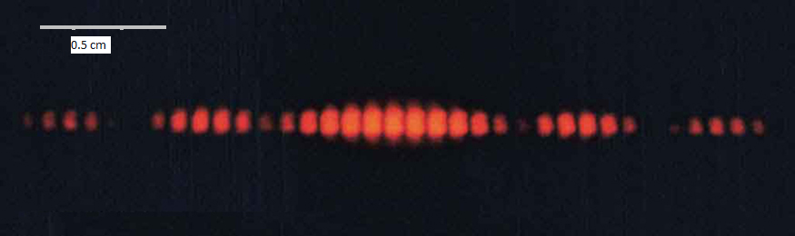
Dans SalsaJ : ouvre l'image, choisis l'outil sélection rectiligne et trace un trait horizontal sur toute la largeur de la photo (maintiens shift pour rester bien horizontal), puis utilise l'outil coupe pour obtenir l'intensité lumineuse en fonction de la position (en pixels) sur cette ligne. Repère les positions en pixels de la première et de la dernière frange sombre de la tache centrale : leur écart, divisé par le nombre d'interfranges qui les séparent, te donne i en pixels. Convertis ensuite en cm à l'aide de l'échelle graduée (0,5 cm) visible sur l'image, puis en m si besoin.
🔗 Activité 6 : Interférences lumineuses
La superposition de deux faisceaux émis par une source monochromatique conduit à l'apparition de zones alternativement sombres et brillantes appelées franges d'interférences.
Comment exploiter une figure d'interférences lumineuses pour déterminer une longueur d'onde ?
DOC. 1 — Schéma du dispositif expérimental
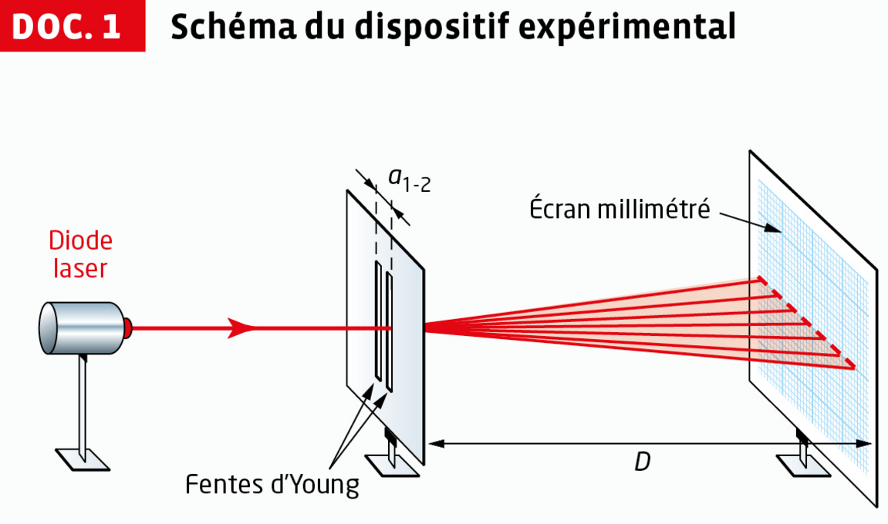
DOC. 2 — Figure observée sur l'écran
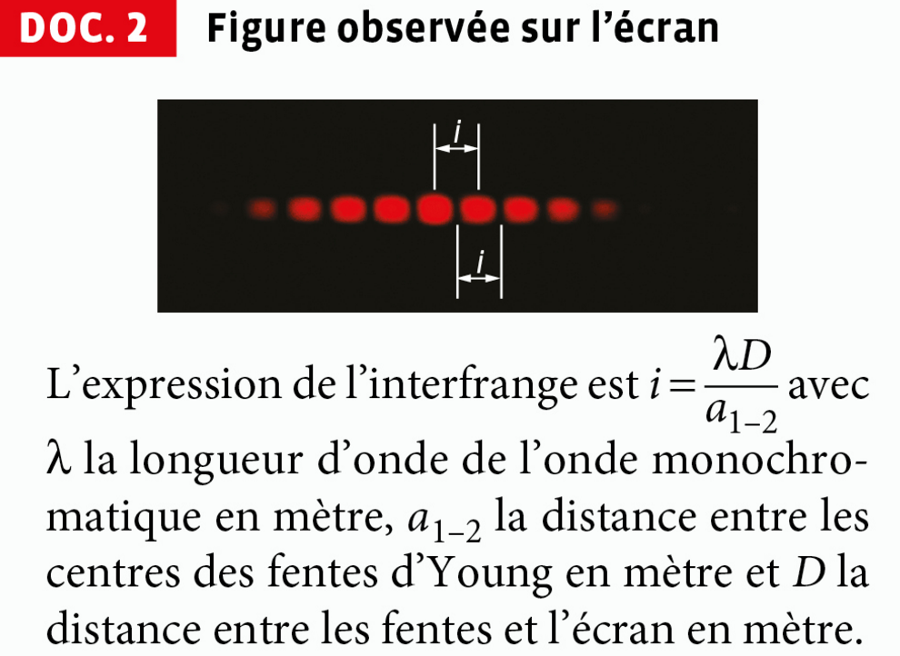
DOC. 3 — Extrait du programme Python Différenciation
![Extrait de programme Python : import numpy as np ; listes L=[valeur,incertitude-type] en unité SI pour i (interfrange), a (distance entre les centres des fentes) et D (distance fentes/écran) ; fonction Alea(L) réalisant un tirage aléatoire selon la loi normale np.random.normal(L[0],L[1]) ; boucle de 100000 itérations simulant une distribution d pour Lambda = Alea(i)*Alea(a)/Alea(D), convertie en nm ; calcul de Lambda (moyenne de d) et de son incertitude-type u(Lambda) (écart-type de d) ; affichage des résultats.](Entrainements/p421-3.png)
Trois versions du programme sont disponibles selon le niveau souhaité :
- Standard : structure complète à compléter (valeurs numériques des listes i, a, D à saisir).
- Confirmé : en plus de la question précédente, affichage de l'histogramme et méthode analytique à compléter soi-même.
- Corrigé (prof) : programme entièrement fonctionnel, à utiliser uniquement pour te corriger après avoir cherché.
DONNÉES — Incertitudes-types
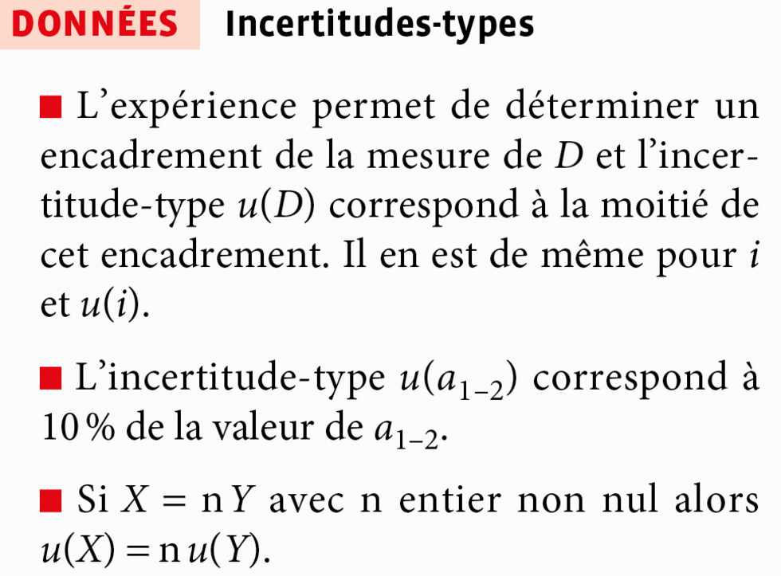
Pense à choisir D assez grand pour que l'interfrange i soit facilement mesurable sur l'écran millimétré, et rappelle-toi la méthode des N franges vue en Activité 5 (question 6) pour limiter l'incertitude sur i.
Mesure D et a₁₋₂ (ou utilise la valeur donnée par le constructeur des fentes d'Young), puis mesure l'interfrange i en utilisant la méthode des N franges vue en Activité 5 (question 6) pour limiter l'incertitude de mesure. Détermine l'encadrement (donc l'incertitude-type) de chacune des trois grandeurs D, i et a₁₋₂ à l'aide des données fournies.
Pour D et i, l'incertitude-type est la moitié de l'encadrement obtenu expérimentalement (doc. données). Pour a₁₋₂, c'est 10 % de sa valeur.
Renseigne dans le code ci-dessous, en unités SI (mètres), les listes i, a et D avec les couples [valeur, incertitude-type] que tu as validés en 3a (ex. pour D : 2 puis 0.0005), puis clique sur ▶ Exécuter pour lancer réellement ce script Python dans ton navigateur (via Pyodide, sans serveur) et obtenir λmes et u(λ).
import numpy as np
# Listes L=[valeur,incertitude-type] en unité SI
i=[,] # interfrange (en m)
a=[,] # Distance entre les centres des fentes (en m)
D=[,] # Distance fentes/écran (en m)
def Alea(L): # Tirage aléatoire selon la loi normale
return np.random.normal(L[0],L[1])
d=[] # Simulation d'une distribution d pour Lambda
Iteration=100000
for j in range(Iteration) :
Alea_Lambda=Alea(i)*Alea(a)/(Alea(D))
d.append(Alea_Lambda*1e9) # Conversion en nm
# Calcul de Lambda et de l'incertitude-type u(Lambda)
Lambda=np.mean(d) # Lambda <- valeur moyenne de d
u_Lambda=np.std(d,ddof=1) # u(Lambda) <- Ecart-type de d
print('\nLongueur d\'onde Lambda =',Lambda,' nm')
print('Incertitude-type : u(Lambda) =',u_Lambda,' nm')
Cet écart normalisé est sans unité. Si sa valeur est inférieure à 2, la mesure est jugée compatible avec la valeur de référence ; au-delà, on considère qu'il y a un désaccord significatif entre les deux valeurs, compte tenu des incertitudes.
🔒 Exécute d'abord le code en 3b pour activer ce champ.
📎 Fichiers Python (niveaux standard et confirmé)
1a. Protocole : mesurer D (grande distance, de l'ordre de 1 à 2 m, pour un interfrange i suffisamment large et facile à mesurer précisément) et a1-2 (valeur donnée par le constructeur des fentes d'Young, ou mesurée si possible), puis mesurer i par la méthode des N franges (mesurer la distance lN séparant les centres de N franges extrêmes et diviser par N − 1, cf. Activité 5). On en déduit λmes = i·a1-2/D.
1b. Le code réalise une simulation de type Monte-Carlo : il tire 100 000 fois des valeurs aléatoires plausibles de i, a1-2 et D (suivant une loi normale centrée sur la valeur mesurée, d'écart-type l'incertitude-type), calcule à chaque tirage la valeur de λ correspondante, puis construit la distribution des 100 000 valeurs de λ ainsi obtenues. La moyenne de cette distribution donne la valeur estimée de λ, et son écart-type donne l'incertitude-type u(λ).
2. Mise en œuvre expérimentale : dispositif laser + fentes d'Young + écran millimétré à D ≈ 1 à 2 m ; mesure de l'interfrange i par la méthode des N franges.
3a. D'après les données : u(D) = (encadrement de D)/2 ; u(i) = (encadrement de i)/2 ; u(a1-2) = 0,10 × a1-2. Exemple de valeurs typiques utilisées dans le corrigé du professeur : i = (6,4 ± 0,05) mm, a1-2 = (0,20 ± 0,02) mm, D = (2 ± 0,0005) m.
3b. En complétant les listes du programme avec ces valeurs (en unités SI : mètres), la simulation (100 000 itérations) donne une longueur d'onde λmes ≈ 640 nm avec une incertitude-type u(λ) ≈ 65 nm (valeurs typiques ; les tiennes dépendent de tes propres mesures). La méthode analytique, utilisant u(λ)/λ = √[(u(i)/i)² + (u(a1-2)/a1-2)² + (u(D)/D)²], conduit au même ordre de grandeur.
import numpy as np
i=[6.4e-3,0.05e-3] # interfrange (en m)
a=[0.2e-3,0.02e-3] # Distance entre les centres des fentes (en m)
D=[2,0.5e-3] # Distance fentes/écran (en m)
def Alea(L): # Tirage aléatoire selon la loi normale
return np.random.normal(L[0],L[1])
d=[] # Simulation d'une distribution d pour Lambda
Iteration=100000
for j in range(Iteration) :
Alea_Lambda=Alea(i)*Alea(a)/(Alea(D))
d.append(Alea_Lambda*1e9) # Conversion en nm
Lambda=np.mean(d) # Lambda <- valeur moyenne de d
u_Lambda=np.std(d,ddof=1) # u(Lambda) <- Ecart-type de d
print('\nLongueur d\'onde Lambda =',Lambda,' nm')
print('Incertitude-type : u(Lambda) =',u_Lambda,' nm')
3c. Pour un laser rouge usuel, λréf ≈ 632,8 nm. Avec λmes ≈ 640 nm et u(λ) ≈ 65 nm, on calcule |λmes − λréf| / u(λ) = |640 − 632,8| / 65 ≈ 0,11, ce qui est très inférieur à 2 : la mesure est donc compatible avec la valeur de référence donnée par le constructeur.
Exercice 11 : Identifier un phénomène
Sur le trajet d'un faisceau laser, on interpose des trous de diamètres différents.
Compare la largeur de la tache centrale de diffraction (délimitée par les deux premières extinctions) sur les deux photos. D'après θ = λ/a, l'écart angulaire θ — et donc la largeur de la tache — est d'autant plus grand que le diamètre a du trou est petit.
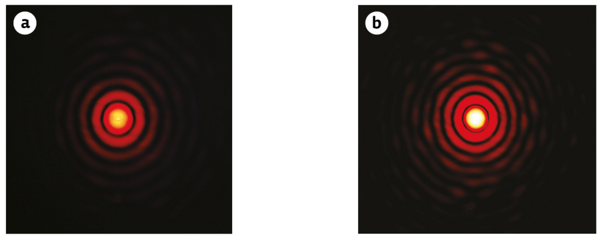
La tache centrale de diffraction — délimitée par les deux premières extinctions situées de part et d'autre du centre — est plus large sur la photo a que sur la photo b. Or l'écart angulaire caractéristique θ = λ/a est d'autant plus grand que le diamètre a du trou est petit : le phénomène de diffraction est donc d'autant plus marqué que le trou est petit. C'est donc sur la photo a que le diamètre du trou est le plus petit.
Exercice 15 : Retour sur l'ouverture du chapitre
Des vagues arrivent à l'entrée de la baie de Voidokilia, proche de la ville grecque de Pylos, toutes les 15 secondes. Leur célérité est de 48 km·h⁻¹.
Observe le comportement des vagues, rectilignes au large, en passant par l'ouverture étroite de la baie : se propagent-elles ensuite uniquement droit devant l'ouverture, ou dans toutes les directions à l'intérieur de la baie ?
Le phénomène de diffraction est nettement marqué : cela signifie que la largeur a de l'ouverture est du même ordre de grandeur que la longueur d'onde λ des vagues. Calcule d'abord λ = v × T (en convertissant v en m·s⁻¹), puis déduis-en un ordre de grandeur pour a.
a. On observe le phénomène de diffraction : les vagues, rectilignes au large, se courbent au passage de l'ouverture de la baie et se propagent ensuite dans toutes les directions à l'intérieur de la baie, y compris dans des zones qui ne sont pas dans l'alignement direct de l'ouverture.
b. La diffraction observée est nettement marquée, ce qui indique que la largeur a de l'ouverture est du même ordre de grandeur que la longueur d'onde λ des vagues. Or λ = v × T, avec v = 48 km·h⁻¹ = 13,3 m·s⁻¹ et T = 15 s, soit λ = 13,3 × 15 ≈ 200 m. On en déduit a ≈ 200 m (quelques centaines de mètres).
Exercice 18 : Exploiter une image
Des interférences à la surface de l'eau dues à la superposition de deux ondes sinusoïdales issues de deux sources ponctuelles, synchrones émettant en phase sont observées.
Observe l'aspect de la surface de l'eau au niveau de M : les rides y sont-elles nettes et bien marquées, ou la surface semble-t-elle lisse ? Cela renseigne sur la façon dont les deux ondes se combinent en ce point (en phase ou en opposition de phase).
Compare l'aspect de la surface au niveau de M' à celui observé en M : est-il identique ou différent ? Un point où la surface reste lisse correspond à des ondes qui arrivent en opposition de phase.
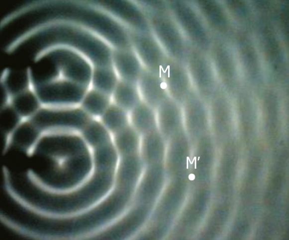
Le point M se trouve sur une ligne où la surface de l'eau présente des rides nettes et bien contrastées : les deux ondes y arrivent en phase, c'est une ligne d'interférences constructives. Le signal au point M est donc une sinusoïde de même fréquence que les sources, d'amplitude maximale (les deux ondes se renforcent).
Le point M' se trouve au contraire sur une zone lisse, sans relief marqué : les deux ondes y arrivent en opposition de phase, c'est une ligne d'interférences destructives. Elles s'annulent en permanence : le signal au point M' reste quasiment nul à chaque instant, la surface de l'eau y est immobile.
Exercice 21 : Exploiter un programme 🐍 Python
Un système d'enregistrement relié à un micro permet de visualiser au cours du temps un signal électrique dont les caractéristiques sont analogues à celles du signal sonore enregistré. Le code source Python suivant est extrait d'un programme qui permet d'étudier l'interférence de deux ondes sonores en représentant la somme de deux signaux électriques périodiques synchrones dont on fait varier la phase à l'origine de l'un d'eux.
from matplotlib import pyplot as plt
from math import pi
import numpy as np
T=1 # en milliseconde
t=np.linspace(0,4,400)
A1=float(input('Amplitude du signal 1 (en mV) : A1 ='))
A2=float(input('Amplitude du signal 2 (en mV): A2 ='))
phi=eval(input('Phase à l\'origine (en rad): phi ='))
def s(A,T,phi):
return A*np.cos(2*pi*t/T+phi)
plt.plot(t,s(A1,T,0),'--',lw=1.2,label='$s_{1}(t)$')
plt.plot(t,s(A2,T,phi),'--',lw=1.2,label='$s_{2}(t)$')
plt.plot(t,s(A1,T,0)+s(A2,T,phi),lw=2.5,label='$s_{1}(t)+ s_{2}(t)$')
plt.title('Somme de deux signaux sinusoïdaux')
plt.xlim(0,4)
plt.ylim(-1.5*(A1+A2),1.5*(A1+A2))
plt.xlabel('$t$ (en s)')
plt.ylabel('Elongation (en mV)')
plt.grid(which='both',ls='--')
plt.legend(loc=9, ncol=3)
plt.show()
Un utilisateur obtient la figure suivante :
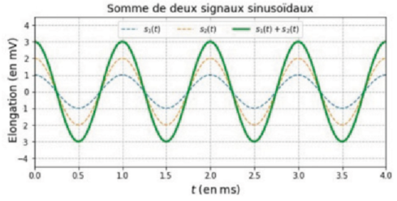
Regarde ce que fait l'instruction return : à quel type d'objet (nombre unique ou tableau de valeurs) correspond A*np.cos(2*pi*t/T+phi), sachant que t est lui-même un tableau de 400 valeurs (ligne 5) ? Les trois arguments A, T et phi désignent des grandeurs physiques d'un signal sinusoïdal que tu connais bien.
Regarde les trois arguments passés à plt.plot à chaque ligne : quel signal est tracé à chaque fois (s1 seul, s2 seul, ou leur somme) ? Pourquoi tracer les trois courbes sur le même graphique plutôt qu'une seule ?
Lis directement les amplitudes de s1(t) et s2(t) sur le graphique (valeur maximale de chaque courbe en pointillés). Pour φ, regarde si les trois courbes atteignent leur maximum en même temps (t = 0, 1, 2, 3, 4 ms) : que vaut alors le déphasage entre s1 et s2 ?
Compare l'amplitude de la somme s1+s2 lue sur le graphique à la somme des amplitudes A1+A2. Que peux-tu en déduire sur le déphasage entre les deux signaux, et sur la nature de l'interférence ?
Ici A1 = 2 mV, A2 = 1 mV et φ = π rad (opposition de phase) : que vaut cos(x+π) par rapport à cos(x) ? Comme les deux amplitudes sont différentes, l'annulation est-elle totale ou partielle ? Utilise le simulateur ci-dessous (2, 1, pi) pour visualiser directement la figure obtenue.
Renseigne les trois valeurs comme le ferait le programme à l'exécution (φ accepte aussi une expression telle que pi, pi/2 ou 2*pi), puis clique sur ▶ Exécuter pour lancer réellement ce script dans ton navigateur et vérifier tes réponses aux questions c. et e.
Amplitude du signal 2 (en mV): A2 =
Phase à l'origine (en rad): phi =
a. Appliquée au tableau t (400 instants, ligne 5), la fonction s(A,T,phi) renvoie un tableau numpy donnant, à chaque instant, l'élongation s(t) = A·cos(2πt/T + φ) d'un signal sinusoïdal. Ses trois arguments A, T et phi désignent respectivement l'amplitude, la période et la phase à l'origine du signal.
b. Les lignes 13 à 15 tracent, sur un même graphique et en fonction du temps, le signal s1(t) (pointillés), le signal s2(t) déphasé de φ (pointillés), puis leur somme s1(t)+s2(t) (trait plein) : cela permet de visualiser directement le résultat de la superposition des deux signaux, c'est-à-dire le phénomène d'interférence.
c. Sur le graphique, s1(t) a pour amplitude A1 = 1 mV et s2(t) pour amplitude A2 = 2 mV. Les trois courbes sont maximales simultanément (t = 0, 1, 2, 3, 4 ms) : les deux signaux sont donc en phase, soit φ = 0 rad.
d. L'amplitude de la somme (3 mV) est égale à A1+A2 = 1+2 = 3 mV, la valeur maximale possible : les deux signaux étant en phase (φ = 0), les interférences sont constructives.
e. Avec A1 = 2 mV, A2 = 1 mV et φ = π rad, les deux signaux sont en opposition de phase : cos(x+π) = −cos(x), donc s2(t) est à chaque instant l'opposé d'un signal de même amplitude que s1. La somme s1(t)+s2(t) a alors pour amplitude |A1−A2| = |2−1| = 1 mV : l'interférence est destructive, mais l'annulation n'est que partielle puisque A1 ≠ A2 (elle serait totale, amplitude nulle, si A1 = A2).
Exercice 28 : En concert
Une ouvreuse est assise à côté de la porte d'une salle de concert restée ouverte et d'une largeur a = 80 cm. Elle ne voit pas la scène mais elle entend tout de même la musique.
Le son contourne l'ouverture de la porte pour se propager dans toutes les directions de la pièce voisine, alors même que l'ouvreuse n'est pas dans l'alignement direct de la scène : c'est le même phénomène que celui observé pour les vagues à l'entrée d'une baie.
Calcule la longueur d'onde λ = v/f de chaque son (célérité du son dans l'air v ≈ 340 m·s⁻¹), puis compare-la à la largeur a de l'ouverture. Le phénomène de diffraction est d'autant plus marqué que λ est grande devant a.
a. Le phénomène qui permet à l'ouvreuse d'entendre la musique sans voir la scène est la diffraction du son au niveau de l'ouverture de la porte.
b. La longueur d'onde du son vaut λ = v/f, avec v ≈ 340 m·s⁻¹ dans l'air. Pour le son grave : λg = 340/100 = 3,4 m. Pour le son aigu : λa = 340/500 = 0,68 m. Avec a = 0,80 m, on obtient λg/a ≈ 4,3 et λa/a ≈ 0,85 : la diffraction est d'autant plus marquée que λ est grande devant a. Elle est donc plus importante pour le son grave (100 Hz) que pour le son aigu (500 Hz).
Exercice 32 : « Bruit + bruit = silence »
Prendre des notes pendant le visionnage de la vidéo afin de préparer les réponses aux questions suivantes.
▶ Vidéo : Interférences acoustiques
Repère dans la vidéo la fréquence f des émetteurs à ultrasons utilisés, puis calcule λ = v/f avec v ≈ 340 m·s⁻¹ (célérité du son dans l'air). Les émetteurs à ultrasons de ce type d'expérience émettent typiquement autour de 40 kHz.
Pense au phénomène d'interférences : selon que la différence de marche δ entre les deux ondes ultrasonores vaut un nombre entier ou un nombre demi-entier de longueurs d'onde, la superposition des deux ondes au niveau du récepteur est-elle renforcée ou annulée ?
Note d₁ et d₂ les distances entre le point d'observation et chacune des deux sources, et δ = d₂ − d₁ la différence de marche. Pour des sources en phase, à quelle condition sur δ (exprimée en fonction de λ et d'un entier k) les deux ondes arrivent-elles en phase au point d'observation ?
a. Les émetteurs à ultrasons utilisés dans ce type d'expérience émettent typiquement à une fréquence f de l'ordre de 40 kHz. Avec v ≈ 340 m·s⁻¹, on obtient λ = v/f = 340/40 000 ≈ 8,5 × 10⁻³ m, soit un ordre de grandeur du millimètre.
b. Les deux ondes ultrasonores se superposent au niveau du récepteur (interférences). Lorsqu'elles arrivent en phase (différence de marche δ multiple entier de λ), elles se renforcent : l'amplitude mesurée à l'oscilloscope est maximale (interférences constructives). Lorsqu'elles arrivent en opposition de phase (δ multiple demi-entier de λ), elles s'annulent : l'amplitude est minimale, quasi nulle — c'est le « silence » obtenu en ajoutant du bruit à du bruit (interférences destructives).
c. En notant d₁ et d₂ les distances entre le point d'observation et chacune des deux sources ponctuelles synchrones et en phase, et δ = d₂ − d₁ la différence de marche, les interférences sont constructives lorsque : δ = k·λ, avec k ∈ ℤ (entier relatif).
Exercice 33 : Établir l'expression de l'interfrange
Des fentes d'Young, distantes de a1-2, sont éclairées par un faisceau laser de longueur d'onde dans le vide λ0. Les deux sources sont en phase.
DONNÉE En un point M d'abscisse x, la différence de chemin optique dans l'air est donnée par la relation δ0 = n·a1-2·x/D, avec D ≫ a1-2, D ≫ x, et n = 1,00 dans l'air.
Écris la condition d'interférences constructives δ0 = kλ0 (k entier relatif), déduis-en l'abscisse xk du point M correspondant en fonction de k, λ0, D, n et a1-2. L'interfrange i est l'écart entre deux positions consécutives de frange brillante : i = xk+1 − xk.
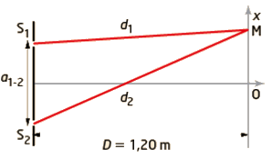
Les interférences sont constructives lorsque la différence de chemin optique vérifie δ0 = kλ0, avec k ∈ ℤ.
Or δ0 = n·a1-2·x/D, donc l'abscisse de la k-ième frange brillante vaut xk = kλ0D/(n·a1-2). L'interfrange i est l'écart entre deux franges brillantes consécutives :
i = xk+1 − xk = λ0D/(n·a1-2). Avec n = 1,00 dans l'air, on obtient finalement : i = λ0D/a1-2.
Exercice 36 : Pointeur laser
Un pointeur laser est utilisé dans le montage suivant : une fente verticale, de largeur a très petite, est placée sur le trajet du faisceau et un écran est situé à la distance D de la fente.
Plusieurs expériences dont les résultats sont réunis dans le tableau ci-dessous sont réalisées.
| Expérience | λ de la source | Largeur de la fente | Distance à l'écran | Largeur de la tache centrale |
|---|---|---|---|---|
| 1 | λ1 | a | D | L1 = 3,4 cm |
| 2 | λ2 = 405 nm | a | D | L2 = 2,1 cm |
| 3 | λ2 = 405 nm | a3 = a/2 | D | L3 = 2L2 |
| 4 | λ2 = 405 nm | a | D4 = D/2 | L4 = L2/2 |
Trois expressions de la largeur L de la tache centrale sont proposées :
L = 2λaD (1) L = 2λ/(Da) (2) L = 2λD/a (3)
Compare les expériences 2 et 3 : quand a est divisée par 2, que devient L d'après chaque expression, et est-ce cohérent avec L3 = 2L2 ? Fais de même avec les expériences 2 et 4 en faisant varier D.
λ et D sont des longueurs, tout comme a. Une largeur L doit elle aussi être homogène à une longueur : vérifie que le rapport obtenu l'est bien.
Les expériences 1 et 2 utilisent la même fente a et la même distance D : écris l'expression de L1 et de L2 avec la formule retenue, puis élimine a et D en faisant le rapport L1/L2.
Utilise la relation établie en c. avec λ2 = 405 nm, L1 = 3,4 cm et L2 = 2,1 cm.
a. D'après l'expérience 3, lorsque a est divisée par 2 (à λ et D fixés), L est multipliée par 2 : L augmente donc quand a diminue, ce qui n'est possible qu'avec l'expression (3), où L est inversement proportionnelle à a. L'expression (1), où L est proportionnelle à a, prédirait au contraire que L diminue : elle est éliminée. D'après l'expérience 4, lorsque D est divisée par 2 (à λ et a fixés), L est divisée par 2 : L diminue donc quand D diminue, ce qui est cohérent avec l'expression (3), où L est proportionnelle à D. L'expression (2), où L serait inversement proportionnelle à D (donc multipliée par 2 si D est divisée par 2), est incompatible avec cette observation : elle est éliminée. Seule l'expression (3) L = 2λD/a est cohérente avec les quatre expériences.
b. λ et D sont homogènes à une longueur, tout comme a : [λ] = [D] = [a] = L (longueur, en m). Le rapport 2λD/a a donc pour dimension L·L/L = L : l'expression (3) est bien homogène à une longueur, comme il se doit pour la largeur L de la tache centrale. L'expression est donc pertinente.
c. Les expériences 1 et 2 sont réalisées avec la même fente (largeur a) et le même écran (distance D). D'après l'expression (3) : L1 = 2λ1D/a et L2 = 2λ2D/a. En faisant le rapport de ces deux égalités, les facteurs 2, D et a s'éliminent, d'où la relation : L1/L2 = λ1/λ2.
d. D'après la relation précédente : λ1 = λ2 × L1/L2 = 405 × 3,4/2,1 ≈ 656 nm (soit 6,56 × 10⁻⁷ m). Cette longueur d'onde correspond à une lumière rouge, cohérente avec la couleur du pointeur laser utilisé.
Exercice 40 : Intensité lumineuse 🐍 Python
Le code source Python suivant est extrait du programme qui permet de simuler l'intensité lumineuse en différents points d'une zone d'interférences obtenue grâce au dispositif des trous d'Young éclairés par un faisceau laser rouge de longueur d'onde 660 nm.
DONNÉE La valeur moyenne sur une période T de [A1cos(2πt/T+φ1) + A2cos(2πt/T+φ2)]² est égale à ½(A1²+A2²) + A1A2cos(φ1−φ2).
[...lignes 1 à 15 : en-tête et imports (matplotlib, math, numpy), non reproduites ici...]
16 T= ...... # Période en femtoseconde ou fs (1 fs = 1e-15 s)
17 t= ...... # 400 dates régulièrement espacées sur 4 périodes
18 A1=1 # Amplitude de la source 1 assimilée à un réel (unité arbitraire)
19 A2=1 # Amplitude de la source 2 assimilée à un réel (unité arbitraire)
# Définition, à l'aide des fonctions de la bibliothèque NumPy, de la
# fonction 's', retournant s(t)=A*cos(2πt/T+phi) pour A et phi donnés
23 def ............. :
24 return .......................
# Définition de la fonction 'interference' retournant des courbes
# modifiables grâce à la présence de la virgule (ex: 's1,').
28 def interference(A1,A2,phi):
29 s1,= plt.plot(......) # Trace le signal s1(t) = A1*cos(2πt/T)
30 s2,= plt.plot(......) # Trace le signal s2(t) = A2*cos(2πt/T+phi)
31 S,= plt.plot(......) # Trace le signal somme S(t) = s1(t)+s2(t)
32 z,= plt.plot(......) # Trace le carré de la somme (s1(t)+s2(t))^2
33 I_phi=np.mean((s(A1,0)+s(A2,phi))**2)#Calcule l'intensité lumineuse
34 I,=plt.plot(t,[I_phi]*400,'r',lw=3)#Trace l'intensité lumineuse I(t)
plt.legend(loc=9, ncol=4)
return s1,s2,S,z,I,I_phi
Pour la ligne 16, relie la période temporelle T d'une onde électromagnétique à sa longueur d'onde λ dans le vide et à la célérité c grâce à la relation λ = c·T. Pour la ligne 17, utilise la même logique que dans l'Exercice 21 mais sur une durée de 4 périodes T (et non 4 s). Pour la fonction s, souviens-toi que T et t restent des variables globales (l'énoncé précise « pour A et phi donnés »).
a1. Ligne 16 — sachant que λ = 660 nm dans le vide et c ≈ 3,00×10⁸ m·s⁻¹ :
a2. Ligne 17 — 400 dates régulièrement espacées sur 4 périodes :
a3. Lignes 23-24 — fonction s(t)=A·cos(2πt/T+phi) pour A et phi donnés :
a4. Lignes 29 à 32 — tracés de s1(t), s2(t), S(t)=s1(t)+s2(t) et z(t)=S(t)² :
Que renvoie np.mean(...) appliqué à un tableau de 400 valeurs : un tableau, ou un seul nombre ? Ce résultat dépend-il de l'instant t, ou seulement de phi ?
En Python, que fait l'opérateur * entre une liste et un entier (répétition ou multiplication terme à terme) ? Que trace-t-on quand toutes les valeurs en ordonnée sont identiques ?
Renseigne une valeur de φ (une expression telle que pi, -pi ou 2*pi est acceptée), puis clique sur ▶ Exécuter pour lancer réellement ce script (avec T = 2,2 fs et A1 = A2 = 1) dans ton navigateur.
| φ | −π | 0 | π | 2π |
|---|---|---|---|---|
| I(φ) mesurée |
a. Code complété (éléments ajoutés en gras) :
16 T = 2.2 # Période en femtoseconde ou fs (1 fs = 1e-15 s)
17 t = np.linspace(0,4*T,400) # 400 dates régulièrement espacées sur 4 périodes
18 A1=1
19 A2=1
23 def s(A,phi):
24 return A*np.cos(2*pi*t/T+phi)
28 def interference(A1,A2,phi):
29 s1,= plt.plot(t,s(A1,0),'--',lw=1.2,label='$s_{1}(t)$')
30 s2,= plt.plot(t,s(A2,phi),'--',lw=1.2,label='$s_{2}(t)$')
31 S,= plt.plot(t,s(A1,0)+s(A2,phi),lw=1.5,label='$s_{1}(t)+s_{2}(t)$')
32 z,= plt.plot(t,(s(A1,0)+s(A2,phi))**2,lw=1.5,label='$(s_{1}(t)+s_{2}(t))^{2}$')
33 I_phi=np.mean((s(A1,0)+s(A2,phi))**2)
34 I,=plt.plot(t,[I_phi]*400,'r',lw=3)
plt.legend(loc=9, ncol=4)
return s1,s2,S,z,I,I_phi
On retrouve bien T = λ/c = 660×10⁻⁹/3,00×10⁸ ≈ 2,2 fs, cohérent avec la période temporelle d'une onde lumineuse rouge.
b. np.mean((s(A1,0)+s(A2,phi))**2) calcule la valeur moyenne temporelle du carré de la somme des deux signaux, sur les 400 instants du tableau t : c'est un unique nombre I(φ), et non un tableau. Pour une valeur de φ fixée, ce nombre ne dépend donc plus du temps : l'intensité lumineuse est constante au cours du temps.
c. [I_phi]*400 répète 400 fois la même valeur I_phi dans une liste ; tracée en fonction de t, cette liste donne une droite horizontale rouge d'ordonnée I_phi, illustrant que l'intensité lumineuse ne varie pas au cours du temps pour un déphasage φ donné.
d. D'après la formule donnée (DONNÉE), avec φ1 = 0 et φ2 = φ, A1 = A2 = 1 : I(φ) = ½(1²+1²) + 1×1×cos(φ) = 1 + cos(φ).
| φ | −π | 0 | π | 2π |
|---|---|---|---|---|
| Signaux | Opposition de phase | En phase | Opposition de phase | En phase (à 2π près) |
| I(φ) = 1+cos(φ) | 0 (minimale) | 2 (maximale) | 0 (minimale) | 2 (maximale) |
| Interférences | Destructives | Constructives | Destructives | Constructives |
Remarque : la simulation ci-dessous est tracée avec A1 = A2 = 1 (unité arbitraire du script), ce qui donne I_max = (A1+A2)² = 4 et I_min = (A1−A2)² = 0 ; seul le rapport I_max/I_min = 2 (soit un facteur 2 entre les deux, conforme à la formule ½(A1²+A2²)+A1A2cos(φ1−φ2) normalisée) importe pour la lecture qualitative du phénomène.
Exercice 41 : Représenter la somme de deux signaux 🐍 Python
Un élève doit corriger et compléter le code source fourni pour représenter, à l'aide d'un langage de programmation, deux signaux électriques sinusoïdaux s1(t) et s2(t) de fréquence f = 200 Hz ainsi que leur somme, selon les consignes suivantes : la phase à l'origine de s1(t) est fixée à 0 radian, la phase à l'origine de s2(t) est choisie par l'utilisateur ; la figure contient un graphe à gauche représentant les deux signaux et un graphe à droite représentant leur somme.
[...lignes 1 à 8 : en-tête et imports (matplotlib, math, numpy), non reproduites ici...]
10 T=1 # Période
11 A1=2 # Amplitude de s1
12 A2=5 # Amplitude de S2
# Saisie par l'utilisateur de la phase à l'origine du signal s2(t)
phi=eval(input('Phase à l\'origine de s2(t) : phi = '))
# Définition du tableau des dates (en ms)
17 t=np.linspace(0,15,100)
18 s2=A2*np.cos(2*pi*t/T)
s1=A1*np.cos(2*pi*t/T)
s=s1+s2
# Définition de la figure contenant 2 graphes
# répartis sur '1 ligne , 2 colonnes'
figure=plt.subplots(1,2)
plt.subplot(1,2,1) # Graphe 1 de gauche
plt.plot(t,s1,"-+",label='$s_{1}(t)$')
plt.plot(t,s2,"-x",label='$s_{2}(t)$')
28 plt.xlim(0,10)
A=A1+A2
plt.ylim(-1.5*A1,1.5*A1)
plt.ylabel('Amplitude (en mV)')
plt.subplot(1,2,2) # Graphe 2 de droite
plt.plot(t,s,'.-g',label='$s_{3}(t)$')
plt.xlim(0,1.5)
plt.tick_params(axis='y',left=False,right=True,
labelleft=False,labelright=True)
plt.ylim(-1.5*A,1.5*A)
plt.legend(loc='upper left')
plt.grid()
plt.show()
Ce code s'exécute sans erreur, mais ne respecte pas la consigne. Clique sur ▶ Voir la figure obtenue pour l'exécuter réellement (avec φ = π) et observer le résultat.
Regarde d'abord si l'échelle temporelle (bornes de l'axe des abscisses) permet de bien voir la forme des signaux sur les deux fenêtres. Regarde ensuite si chaque grandeur tracée est clairement identifiable (légendes, titres, axes légendés).
Modifie directement les champs ci-dessous (ils remplacent les lignes correspondantes du code), puis clique sur ▶ Exécuter mon code. 💡
Ligne 10 : relie la période T à la fréquence f = 200 Hz donnée dans l'énoncé (T = 1/f), et exprime-la en ms. Ligne 17 : choisis les bornes de t pour couvrir un nombre entier de périodes, avec suffisamment de points pour un tracé lisse. Ligne 18 : il manque un terme dans l'expression de s2(t) pour que sa phase à l'origine soit bien φ. Ligne 28 et graphe de droite : adapte les bornes des abscisses à la nouvelle valeur de T, et complète les légendes des axes et les titres.
Ligne 17 — t = np.linspace( , , )
Ligne 18 — s2 =
Phase — phi = rad
Graphe de gauche :
xlim( , ) xlabel = titre =
Graphe de droite :
xlim( , ) xlabel =
ylabel = titre =
Pense aux échelles des fenêtres (bornes cohérentes avec la période étudiée), à la légende des courbes (identifier s1, s2, s), à la légende des axes (grandeur et unité), au titre de chaque graphe, et aux bonnes pratiques d'écriture du code (unités précisées en commentaire, séparateur décimal, réutilisation d'instructions qui fonctionnent déjà).
1. Sur la figure obtenue avec le code fourni : l'échelle du graphe de gauche n'est pas adaptée (bornes 0-10 ms alors que T = 1 ms est utilisée dans le code au lieu de 5 ms, ce qui écrase les oscillations) ; il n'y a pas de légende sur l'axe des abscisses et s1(t)/s2(t) ne sont pas clairement identifiés (pas d'appel à plt.legend() sur ce graphe) ; il n'y a pas de titre. Sur le graphe de droite, l'échelle (0-1,5 ms) est bien trop resserrée par rapport à la période réelle (T = 5 ms), et il n'y a pas de légende sur les axes.
Correction des lignes de code :
10 T = 5 # Période en ms (T = 1/f = 1/200 = 5,00×10⁻³ s = 5,00 ms)
17 t = np.linspace(0,15,1000) # 3 périodes, échantillonnage fin pour un tracé lisse
18 s2 = A2*np.cos(2*pi*t/T+phi) # le terme phi manquait
s1 = A1*np.cos(2*pi*t/T)
s = s1+s2
plt.subplot(1,2,1)
plt.plot(t,s1,label='$s_{1}(t)$')
plt.plot(t,s2,label='$s_{2}(t)$')
28 plt.xlim(0,15)
A=A1+A2
plt.ylim(-1.5*A1,1.5*A1)
plt.xlabel('$t$ (en ms)')
plt.ylabel('Amplitude (en mV)')
plt.title('Signaux à ajouter')
plt.legend()
plt.subplot(1,2,2)
plt.plot(t,s,label='$s_{3}(t)$')
plt.xlim(0,15)
plt.tick_params(axis='y',left=False,right=True,labelleft=False,labelright=True)
plt.ylim(-1.5*A,1.5*A)
plt.xlabel('$t$ (en ms)')
plt.ylabel('Elongation (en mV)')
plt.title('Somme des signaux')
plt.legend(loc='upper left')
plt.grid()
plt.show()
2. Pour présenter convenablement une somme de signaux sinusoïdaux dont la phase de l'un d'eux varie, il faut : choisir des bornes d'axe des temps cohérentes avec la période étudiée (assez larges pour voir plusieurs périodes, assez resserrées pour distinguer la forme du signal) ; identifier chaque courbe par une légende (label=... puis plt.legend()) ; légender chaque axe avec la grandeur et son unité (plt.xlabel, plt.ylabel) ; donner un titre à chaque graphe (plt.title) ; et, côté codage, préciser les unités en commentaire, utiliser le point comme séparateur décimal (jamais la virgule), et réutiliser/adapter les instructions qui fonctionnent déjà sur un graphe pour l'autre plutôt que de tout ressaisir.
Exercice 42 : Critère de Rayleigh
Actuellement, l'observation de détails d'un objet céleste avec un télescope terrestre est principalement limitée par le diamètre D de l'objectif du télescope qui collecte la lumière provenant de cet objet.
La première planète extrasolaire dont on a pu faire une image par observation directe dans le proche infrarouge s'appelle 2M1207b. Cette exoplanète orbite à une distance estimée à 55 unités astronomiques (ua) autour de l'étoile 2M1207a, située à 230 années-lumière (al) de la Terre.
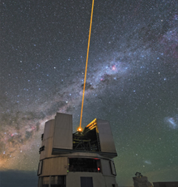
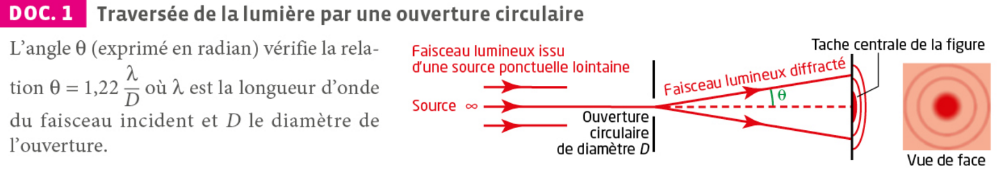
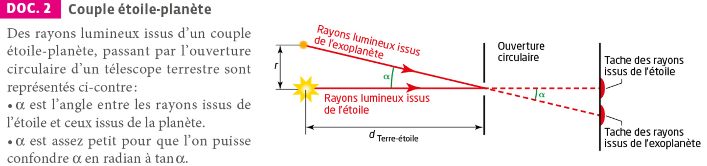
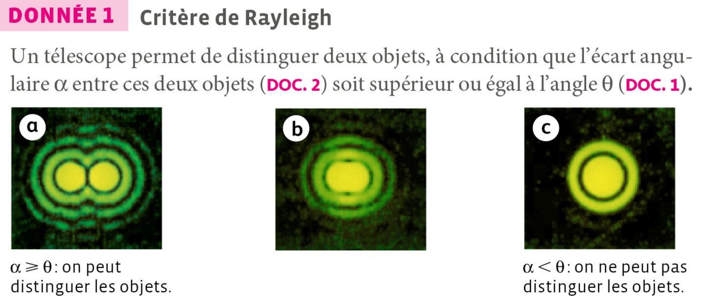
DONNÉE 2 : 1 ua = 1,496×10¹¹ m ; 1 al = 9,461×10¹⁵ m.
Que se passe-t-il pour un faisceau lumineux lorsqu'il traverse une ouverture de taille finie (DOC.1) ? Cet étalement angulaire ne peut s'expliquer que par une des deux descriptions possibles de la lumière (corpusculaire ou ondulatoire).
Le télescope permet tout juste de distinguer les deux objets lorsque α = θ (critère de Rayleigh). Exprime d'abord α grâce au DOC.2 (α ≈ r/dTerre-étoile, en convertissant r en mètres avec l'ua et d en mètres avec l'année-lumière), puis isole D dans la relation du DOC.1.
Pense à un autre instrument optique du quotidien (œil, appareil photo…) dont la capacité à séparer deux détails fins dépend aussi du diamètre de son ouverture.
1. Le phénomène physique caractérisé par l'angle θ est la diffraction : lorsqu'un faisceau lumineux traverse une ouverture circulaire de dimension finie (l'objectif du télescope, de diamètre D), il ne se propage plus en ligne droite mais s'étale angulairement, formant une tache centrale entourée d'anneaux. La propriété de la lumière qui permet d'expliquer ce phénomène est son caractère ondulatoire : seule une description ondulatoire de la lumière rend compte de cet étalement, contrairement à l'optique géométrique qui prévoirait une image ponctuelle.
2. D'après le critère de Rayleigh, l'étoile et la planète sont tout juste discernables lorsque α = θ = 1,22 λ/D, soit D = 1,22 λ/α.
Calcul de α, avec α ≈ r/dTerre-étoile (DOC.2) :
• r = 55 ua = 55 × 1,496×10¹¹ = 8,23×10¹² m
• dTerre-étoile = 230 al = 230 × 9,461×10¹⁵ = 2,18×10¹⁸ m
soit α = 8,23×10¹² / 2,18×10¹⁸ ≈ 3,8×10⁻⁶ rad.
D'où D = (1,22 × 2,0×10⁻⁶) / (3,8×10⁻⁶) ≈ 0,65 m. Il faudrait donc un télescope d'au moins environ 65 cm de diamètre pour espérer distinguer les deux astres, au regard de la seule limite de diffraction.
Regard critique : cette valeur correspond à un télescope amateur relativement modeste, ce qui semble surprenant pour une prouesse d'observation aussi remarquable. En réalité, la première image directe de 2M1207b a été obtenue avec le VLT (8,2 m de diamètre), un instrument bien plus grand. La diffraction n'est donc pas le seul facteur limitant en pratique : il faut aussi s'affranchir de la turbulence atmosphérique (d'où l'usage de l'optique adaptative) et surtout du très fort contraste de luminosité entre l'étoile et la planète (d'où l'usage de coronographes). Le calcul donne un ordre de grandeur minimal, une condition nécessaire mais non suffisante en observation réelle.
3. La diffraction limite le pouvoir de résolution de tout instrument optique. Elle empêche par exemple l'œil nu, ou un appareil photo, de distinguer deux détails très rapprochés : au-delà d'un certain diamètre d'ouverture, seule une augmentation du diamètre de l'instrument permet d'améliorer la résolution angulaire.
Exercice 43 : Diffraction par une fente
La diffraction met en évidence le caractère ondulatoire d'un phénomène ; elle fut étudiée par de nombreux physiciens comme Christian Huygens, Augustin Fresnel et Joseph von Fraunhofer. Cette propriété des ondes est utilisée pour déterminer la longueur d'onde d'une onde lumineuse monochromatique émise par un laser.
🧰 Matériel disponible
- Laser (ou diode laser) sur support de hauteur réglable, de longueur d'onde communiquée lors de l'appel n°1. Attention ! Ne jamais regarder le faisceau dans l'axe de visée.
- Support de hauteur réglable
- Fentes de largeurs a connues
- Écran blanc
- Mètre-ruban de 2 à 3 m ou banc d'optique
- Lampe individuelle peu puissante (type lampe de bureau)
- Règle graduée en mm non métallique
- Longue table
- Ordinateur muni d'un logiciel tableur-grapheur
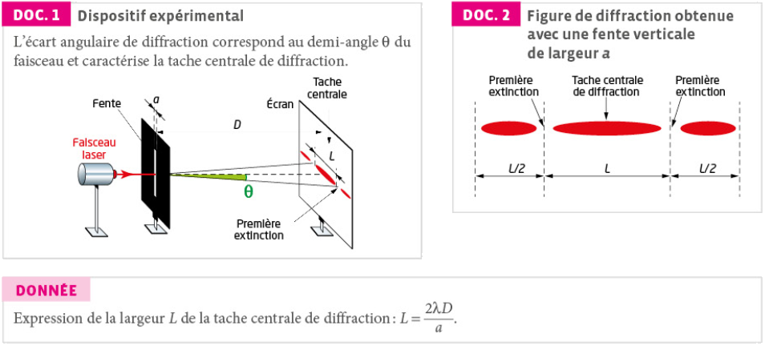
Repense à la relation donnée L = 2λD/a : elle relie une grandeur que tu peux mesurer directement (L, à l'aide de l'écran et de la règle), une distance que tu choisis (D) et une largeur de fente connue (a). Isole λ, et réfléchis à ce que tu dois mesurer, avec quel matériel, et comment répéter la mesure pour réduire l'incertitude (plusieurs fentes a, plusieurs distances D, répétition des mesures de L).
📞 Appel n°1 — Appeler le professeur pour qu'il vérifie la démarche expérimentale.
Installe le dispositif en respectant les consignes de sécurité laser, mesure D avec le mètre-ruban, puis mesure L pour chaque fente a testée. Note soigneusement toutes tes mesures (avec leurs unités) : elles te serviront à la question 3.
📞 Appel n°2 — Appeler le professeur pour lui présenter les résultats.
La valeur mesurée λmes est la moyenne des valeurs de λ obtenues par la classe ; l'incertitude-type u(λ) s'obtient à partir de l'écart-type de la série divisé par la racine carrée du nombre de mesures (incertitude-type de la moyenne). Le résultat s'écrit alors λmes = (valeur ± u(λ)) unité. La compatibilité avec λref est établie si le quotient |λmes − λref|/u(λmes) est inférieur à 2.
- proposer une écriture du résultat de la mesure λmes avec son incertitude-type u(λ) ;
- vérifier la compatibilité avec la valeur donnée par le constructeur λref en calculant le quotient |λmes − λref|/u(λmes).
Pense à toutes les étapes de la mesure où une erreur peut se glisser : lecture de L sur l'écran (bords de la tache centrale peu nets), mesure de D, valeur de a annoncée par le fabricant, alignement du dispositif, parallaxe lors des lectures à la règle...
1. D'après la relation fournie, λ = aL/(2D). Une démarche possible : placer le laser face à une fente de largeur a connue, placer l'écran à une distance D mesurée au mètre-ruban (la plus grande possible pour agrandir la tache et limiter l'incertitude relative sur L), mesurer la largeur L de la tache centrale à la règle graduée non métallique, puis calculer λ. Répéter la mesure pour plusieurs largeurs de fente a et/ou plusieurs distances D, et éventuellement tracer L en fonction de 1/a (droite de coefficient directeur 2λD) afin d'obtenir une valeur de λ plus précise qu'avec une seule mesure.
2. Cette étape est réalisée en autonomie sous le contrôle du professeur ; les valeurs de a, D et L mesurées, ainsi que la valeur de λ qui en découle, doivent être consignées avant de passer à la question 3.
3. À partir de la série de valeurs de λ obtenues par l'ensemble de la classe (dont la tienne), λmes se calcule comme la moyenne de ces valeurs, et u(λ) comme l'incertitude-type de cette moyenne (écart-type de la série divisé par la racine carrée du nombre de mesures). Le résultat s'écrit sous la forme λmes = (λmes ± u(λ)) nm, en gardant un nombre cohérent de chiffres significatifs. La compatibilité avec la valeur du constructeur λref est vérifiée si |λmes − λref|/u(λmes) < 2 : dans ce cas, les deux valeurs sont considérées comme compatibles, l'écart observé étant attribuable aux incertitudes de mesure.
4. Plusieurs sources d'erreur peuvent expliquer un écart entre λmes et λref : difficulté à repérer précisément les bords de la tache centrale (extinctions peu franches) lors de la mesure de L, incertitude sur la mesure de la distance D (mètre-ruban, alignement), incertitude sur la valeur réelle de la largeur de fente a (tolérance de fabrication), défaut d'alignement du faisceau laser perpendiculairement à l'écran, ou encore erreur de parallaxe lors des lectures à la règle.
Diffraction par une poudre de cacao
Contrôle de la largeur d'un fil de suture
Granulométrie du lactose
Un brin en matière synthétique
Qualité d'écoute d'une enceinte bluetooth
Théma Interférences
Diffraction
Modification de la direction de propagation d'une onde au passage d'une ouverture ou d'un obstacle de petite taille. D'autant plus marquée que a est voisin ou inférieur à λ. Ne modifie ni f ni λ.
Angle caractéristique
θ en rad, λ et a en m. Écart angulaire entre l'axe et le milieu de la première extinction.
Conditions
Deux sources synchrones (même fréquence) et cohérentes (déphasage constant) → zones d'amplitude min. et max. dans l'espace.
Différence de marche
δ = S₂P − S₁P
- δ = n·λ ⟹ interférence constructive
- δ = (n+1/2)·λ ⟹ interférence destructive
Interfrange (trous d'Young)
i, D et a en mètre ; λ en mètre. i augmente avec λ et D, diminue quand a augmente.
- Diffraction et interférences sont deux phénomènes caractéristiques du comportement ondulatoire (mécanique ou lumineux).
- La diffraction s'observe quand la taille de l'ouverture/obstacle est voisine ou inférieure à λ ; elle ne change ni f ni λ.
- θ = λ/a : plus l'ouverture est petite, plus l'onde s'étale.
- Les interférences nécessitent deux sources synchrones et cohérentes.
- δ = n·λ → constructif (frange brillante) ; δ = (n+1/2)·λ → destructif (frange sombre).
- Interfrange : i = λD/a, mesurable dans le dispositif des trous d'Young.
- Capacité numérique : un programme Python permet de calculer la différence de marche δ = S₂P − S₁P en tout point P, puis de déterminer la nature (constructive/destructive) de l'interférence via le rapport δ/λ.
- Diffraction
- Modification de la direction de propagation d'une onde au passage d'une ouverture ou d'un obstacle de petite taille (voisine ou inférieure à λ) ; ne modifie ni la fréquence ni la longueur d'onde.
- Angle caractéristique de diffraction θ
- Écart angulaire entre l'axe de propagation et le milieu de la première extinction de la figure de diffraction : θ = λ/a, avec a la taille de l'ouverture ou de l'obstacle.
- Sources synchrones
- Deux sources d'ondes de même fréquence.
- Sources cohérentes
- Deux sources d'ondes dont le déphasage est constant au cours du temps ; condition nécessaire, avec la synchronisation, pour observer une figure d'interférences stable.
- Différence de marche δ
- Différence des distances parcourues par les ondes issues de deux sources pour atteindre un même point P : δ = S₂P − S₁P.
- Interférence constructive
- Amplification de l'onde résultante en un point où la différence de marche est un multiple entier de la longueur d'onde : δ = n·λ.
- Interférence destructive
- Atténuation (ou annulation) de l'onde résultante en un point où la différence de marche est un multiple demi-entier de la longueur d'onde : δ = (n + 1/2)·λ.
- Interfrange i
- Distance séparant deux franges brillantes (ou sombres) consécutives dans une figure d'interférences ; pour le dispositif des trous d'Young : i = λ·D/a.
- Onde monochromatique
- Onde ne comportant qu'une seule fréquence (et donc une seule longueur d'onde) ; par opposition à une onde polychromatique (lumière blanche) qui superpose plusieurs radiations.
- Écart angulaire (demi-angle) θ
- Demi-angle au sommet de la tache centrale de diffraction, entre l'axe du faisceau incident et le milieu de la première extinction ; θ = λ/a en radian.
- Fentes d'Young
- Dispositif de deux fentes fines et parallèles, très proches l'une de l'autre, créant deux sources secondaires cohérentes à partir d'une source primaire unique, utilisé pour observer des interférences lumineuses.
- Source secondaire
- Source d'onde créée par division d'une source primaire unique (par exemple à travers deux fentes), ce qui garantit que les deux sources obtenues sont synchrones et cohérentes.
- Longueur d'onde λ
- Distance, en mètre, parcourue par une onde périodique pendant une période T ; pour une onde progressant à la célérité v, λ = v·T = v/f.
- Onde progressive
- Phénomène de propagation d'une perturbation dans un milieu, sans transport de matière mais avec transport d'énergie.
▶ Cours 3 — Diffraction
▶ Cours 4 — Interférences
▶ Diffraction sur cuve à ondes
Olivier Oreggia
▶ Laser Diffraction and Interference
TSG Physics
▶ Interférences avec des ondes hydrauliques
- TP 09 — Diffraction des ondes (Fente d'Young)
- TP 10 — Interférences des ondes (SalsaJ)
- TP 11 — Interférences sonores (Python)
- Exercices n° 7, 12, 13, 23, 29 (diffraction) et 8, 20, 24, 25, 26, 35, 37, 39 (interférences), p. 428 à 439